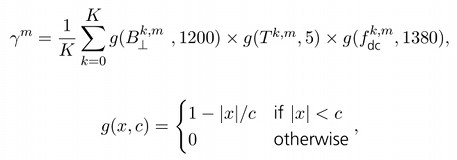

| InSAR Stack Overview | |
This NEST function gives a general information about the interferometric stack. The information about the acquisition date, sensor, mode, as well as information about perpendicular and temporal baselines are being listed. Also an estimate for the modeled (expected) coherence is being computed, and used in selection of the optimal master image for the InSAR stack.
The master image is selected such that the dispersion of the perpendicular baseline is as low as possible. The master image is selected maximizing the (expected) stack coherence of the interferometric stack. The "optimal" master implies improved visual interpretation of the interferograms and aids quality assessment.
The stack coherence for a stack with master image m is defined as:

where B symbol represents the perpendicular baseline between images m and k at the center of the image, the symbol T the temporal baseline, and fDC the Doppler baseline (the mean Doppler centroid frequency difference). The divisor c, in the second equation, can be regarded as a critical baseline for which the total de-correlation is expected for targets with the a distributed scattering mechanism.
The values given in the first equation, are typical for ERS and Envisat.
The coherence modeled by this functionality, and other information provided by this functionality, is purely based on the metadata information of input products. The complex data (nor any other information from the source product bands) in modeling of the coherence and other parameters is not used at all. Thus this function can also be applied on the detected products, however, the interpretation of the modeled coherence and acceptance of recommendations for the choice of the master image has to be performed with great care.
The model used in computation of coherence will severely underestimate the coherence in ERS-2 / Envisat Cross Interferometry applications. For this, and similar application, more robust model that integrates the principles of the wave-number shift shall be used.